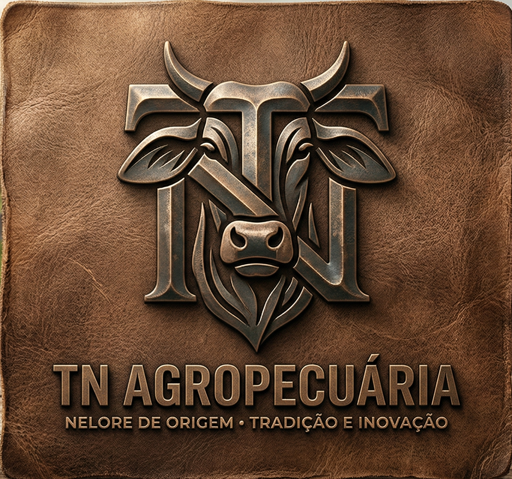
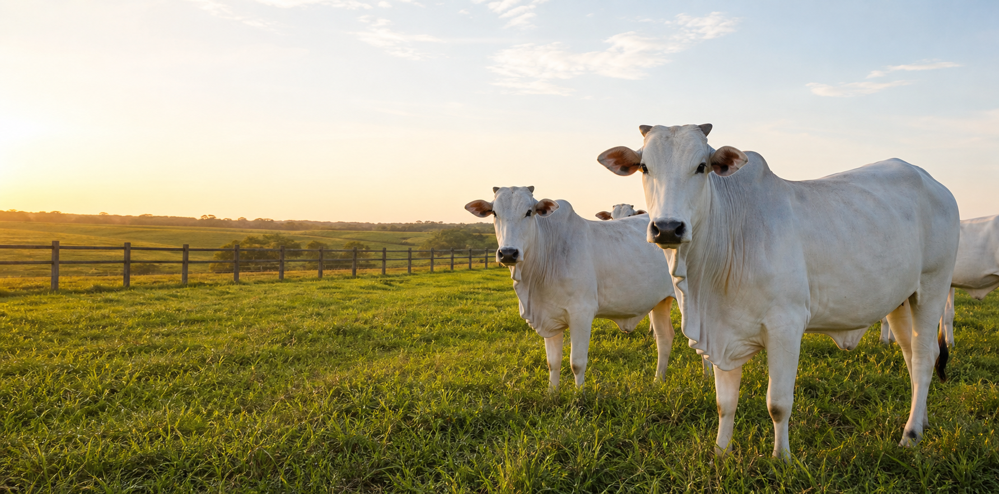

Corte
Garrotes Nelore
Lote uniforme para recria e engorda, com bom padrão racial e manejo em pasto.
Consultar
TN AGROPECUÁRIA Nelore de origem
Nelore de origem, tradição e inovação
Fazenda em Uberaba, no Triângulo Mineiro. Compra e venda de gado Nelore com negociação em todo o Brasil.
Disponíveis para negociação
Lote uniforme para recria e engorda, com bom padrão racial e manejo em pasto.
ConsultarVacas e novilhas com foco em fertilidade, docilidade e produção de bezerros fortes.
ConsultarAnimais jovens com boa estrutura corporal, prontos para entrada em sistemas produtivos.
ConsultarComo funciona
Compra, venda, reposição, cria, recria ou engorda.
Fotos, vídeos e informações principais dos animais disponíveis.
Combinação direta de valores, retirada e logística.
Negócio com confiança
Com base em Uberaba, a TN AGROPECUÁRIA trabalha com lotes avaliados no curral e negociações em todo o Brasil.
Atendimento
Atendimento a partir de Uberaba para compradores e vendedores de todo o Brasil.
Responsável pelo atendimento: Yuri Tucci
+55 (22) 99271-8590 Instagram @tnnelore